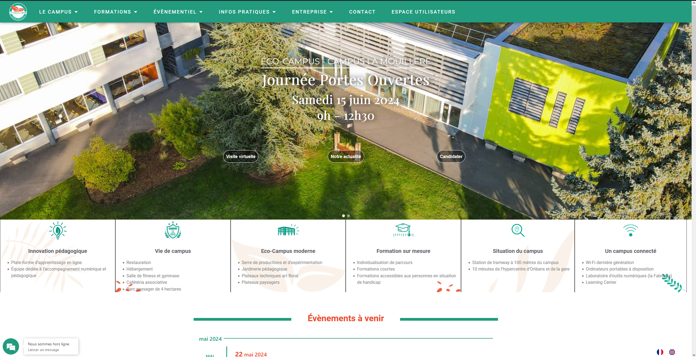

Projet Lafleur
Pour ce projet, nous devions réaliser un site de e-commerce pour la vente de fleurs.

Projet Recherche de stages
Pour ce projet, nous devions mettre à jour un site permettant de gérer les recherches de stages des élèves.

Projet AMAP
Pour ce projet, nous devions créer une application mobile permettant à des livreurs de mieux organiser leurs livraisons.
Projet Stage STICOM
Pour ce projet qui m'a été confié lors de mon stage de première année de BTS à l'imprimerie giennoise, je devais réaliser un site vitrine sur WordPress, en réalisant tout de A à Z, même le thème.
Mettre en place un gestionnaire de parc informatique et ticketing sur un environnement Linux avec GLPI
GLPI est un outil pour la gestion des parcs informatiques. Je l'ai installé sur un système Linux et je peux démontrer comment remonter des postes et gérer des tickets.
Projet Portfolio
Pour ce projet, je devais réaliser un site relatant mes expériences, projets et compétences obtenues lors de mon BTS (je n'ai pas besoin de vous le présenter car vous vous trouvez déjà dessus).
Maintenance du site du campus La Mouillère
Ce projet prend place lors de mon stage de seconde année de BTS. J'ai eu pour mission d'assurer la maintenance du site présentant le campus La Mouillère.
Développer un Intranet personnel pour le campus La Mouillère
Ce projet prend place lors de mon stage de seconde année de BTS. J'ai eu pour mission de mettre en place un intranet personnel pour les élèves et le personnel du campus La Mouillère, avec une newsletter, un agenda et une boîte à suggestions. Ce site a pour but de centraliser toutes les informations internes au campus.
Projet Lafleur
Lors de ma première année, on nous a proposé de réaliser en groupe un site de e-commerce permettant de vendre des fleurs sur internet. Ce site contient une base de données, un front-end et un back-end (ce projet n'a pas pu être terminé dans la période donnée).
Voici la page d'accueil du site internet, la connexion n'est pas nécessaire pour y accéder. Sur cette page, on peut retrouver :
Un bouton pour accéder au profil ou se connecter
Un bouton pour accéder au panier
Une barre de recherche est à disposition, avec un filtre
Il y a aussi une section avec les produits du moment
Voici la page de détails du produit où l'on peut retrouver :
Des photos de celui-ci
La description de celui-ci
Ainsi que des commentaires sur ce produit
On peut aussi l'ajouter au panier
Voici ce que j'ai pu réaliser, le reste a été fait par le groupe.
Je n'ai pas pu continuer les détails de ce projet à cause d'une corruption de la structure du site.
Compétences obtenues grâce à ce projet :
- Travailler en mode projet (Analyser les objectifs et les modalités d’organisation d’un projet, Planifier les activités)
- Mettre à disposition des utilisateurs un service informatique (Déployer un service)
Lors de la réalisation de ce projet, j'ai pu mettre en application les cours que j'ai pu avoir sur la gestion de base de données, la manipulation des données afin de les utiliser dans un site internet, ainsi que l'utilisation de HTML, CSS, PHP, SQL et Bootstrap.
Projet recherche de stages
Ce projet a pour but d’aider les enseignants ainsi que les élèves du lycée à garder un suivi de la recherche de stages des élèves : les demandes, les refus, les stages validés, etc. Ce projet s’étend sur plusieurs années, et ce sont à chaque fois les élèves de BTS SIO2 qui réalisent des modifications afin de peaufiner le site et régler des potentiels soucis. Nous avons été répartis en 3 groupes pour 3 projets. Je suis arrivé sur ce projet en cours de route, ayant fini celui auquel mon groupe était assigné. Mon groupe a donc repris la version des SIO2 de 2022 et nous avons dû faire des modifications sur celle-ci. Ce site contient une base de données, un front-end et un back-end.
Tout commence par une page de connexion où l’on peut faire trois choses :
S’inscrire : permet de renseigner un nouveau compte
Se connecter : permet de se connecter à notre compte s'il existe déjà
Mot de passe oublié : permet de réinitialiser le mot de passe d’un compte existant si celui-ci a été perdu ou oublié
Ensuite, nous arrivons selon les droits de notre compte sur une page d’accueil front office ou back office.
La partie front office comporte :
Une page historique des recherches : dans laquelle on trouve l’entreprise, la date de la demande, l'état, la raison du refus, la période, et on peut la supprimer ou la modifier.
On peut aussi ajouter une nouvelle demande, une nouvelle entreprise et un nouveau tuteur.
Un compartiment à gauche nous permet d’accéder à notre profil et à un onglet pour de recherches de stages (présent dans toutes les pages du front office).
Il y a aussi le bouton pour envoyer des tickets pour rapporter des bugs, etc. (présent dans toutes les pages du front office).
Ainsi qu’un bas de page pour les copyrights (présent dans toutes les pages du front office).
Le profil : nous montre notre profil, nous permet de le modifier. Il y a aussi l’historique des stages associés, les attestations, les conventions, et les évaluations.

La recherche : Qui nous permet de voir une liste des entreprises et de faire des recherches dans celle-ci. Elle comporte une partie recherche avec des filtres et une partie affichage de la liste comportant : le nom, le téléphone, le nom du contact, l’email, le code postal et des informations avec un bouton.
La partie back-office comporte :
Un compartiment à gauche nous permet d’accéder aux différents onglets proposés que je vais développer, ainsi qu’un bas de page pour les copyrights (présent dans toutes les pages du back-office).
Un dashboard où l’on voit le nombre d’étudiants avec un stage en SIO1 et SIO2, une liste des élèves sans stages
Et une liste d’élèves avec stages, ces listes comportent leur photo de profil, leur classe et un bouton pour voir la liste de leurs recherches


Une gestion élève où l’on peut rechercher des élèves avec des filtres, et une liste des élèves que l’on peut modifier et supprimer. Cette liste comporte le nom, le prénom, la classe, le début et la fin du stage des étudiants.
Une gestion entreprise où l’on peut rechercher des entreprises avec des filtres, et une liste des entreprises que l’on peut modifier, supprimer et voir les demandes faites à cette entreprise. Cette liste comporte le nom, le téléphone, le nom du contact, l’email et le code postal de ces entreprises.

Une gestion des périodes de stages qui comporte une liste de ces périodes avec la date de début, la date de fin, la promotion, et l’on peut supprimer ces périodes ou en ajouter.
Pour finir, une gestion des tickets comportant une liste de ces dits tickets avec la date, le demandeur. On peut les modifier, les traiter ou les supprimer.

https://github.com/FlavienRG/Stages2023.git
Compétences obtenues grâce à ce projet :
- Travailler en mode projet (Analyser les objectifs et les modalités d’organisation d’un projet, Planifier les activités)
Lors de la réalisation de ce projet, j'ai pu mettre en application les cours que j'ai eus sur la gestion de base de données, la manipulation des données afin de les utiliser dans un site internet, ainsi que l'utilisation de HTML, CSS, PHP, SQL et Bootstrap.
Projet AMAP
Le projet AMAP a pour but de faciliter le métier des livreurs. La secrétaire remplit les éléments d’une tournée de livraison sur un site internet à disposition du livreur. Une application vient récupérer ces données afin de proposer un affichage plus compréhensible et il peut les trier pour optimiser son trajet. Le projet consiste à réaliser cette application.
Tout d'abord, en arrivant sur l’application, on se retrouve face à une petite animation de lancement.
Ensuite, on se retrouve face à 3 boutons. Voici leur utilité :
Charger : permet de charger les données du site internet sur une base de données intégrée au téléphone. En appuyant, un chargement se lance le temps de récupérer les données, et traduit l’UML pour pouvoir les afficher ensuite.

Afficher : il permet d’afficher les données sous forme de compartiment avec le nom du client, son adresse, le nombre de produits et son montant.

Trier : permet de trier les données dans l’ordre pour optimiser les trajets du livreur. Cela fonctionne en cliquant sur les compartiments afin de les remonter en haut.
Avant le tri :

Après le tri :

https://github.com/FlavienRG/AMAP.git
Compétences obtenues grâce à ce projet :
- Travailler en mode projet (Analyser les objectifs et les modalités d’organisation d’un projet, Planifier les activités)
Lors de la réalisation de ce projet, j'ai pu mettre en application les cours que j'ai eus sur le développement informatique, la POO (Programmation orientée objet), ainsi que le développement pour Android.
Projet STICOM
Le projet STICOM a pour but de créer un site dit "vitrine" afin de présenter les activités du SYCTOM, Le Syndicat mixte central de traitement des déchets des régions de Gien et Châteauneuf sur Loire. Ce projet m’a été confié lors de mon immersion au sein de l'imprimerie giennoise durant ma première année de BTS SIO. Le site devait être réalisé sur WordPress, mais pas en utilisant un thème déjà préfait, j'ai dû créer le thème de A à Z ce qui était intéressant.
Lorsqu'on va sur le site, on se retrouve face à une page d'accueil contenant des photos du site ainsi que des présentations des activités réalisées.
Continuons avec la page nommée "les Elus" qui présente les élus du Syctom, leurs photos, leurs noms prénoms et leurs villes. Il y a aussi le mot du président ainsi qu'une présentation des autres membres du Syctom.

Maintenant nous allons parler de la page CVE (centre d'incinération avec valorisation énergétique) d'Arrabloy. Cette page consiste à informer sur ce fameux CVE.
Ensuite, il y a la page Travaux, elle consiste à informer sur les différents chantiers sur le centre de valorisation des déchets énergétiques.
Par la suite, la page Bilan, qui révèle quelques chiffres à propos du centre de valorisation des déchets énergétiques.
Il y a aussi la page ISBN de Bray-Saint-Aignan, elle informe sur l'installation de stockage de déchets non dangereux.

Nous avons aussi la page des rapports annuels, elle permet de mettre à disposition les rapports annuels du Syctom.

Ensuite, la page compte rendu, elle met à disposition les comptes rendus des comités syndicaux.
Enfin, il y a la page de contact qui permet d'écrire un mail au propriétaire du site.
Compétences obtenues grâce à ce projet :
Développer la présence en ligne de l’organisation (Participer à la valorisation de l’image de l’organisation sur les médias numériques en tenant compte du cadre juridique et des enjeux économiques)
Lors de la réalisation de ce projet, j'ai pu me former au framework WordPress ainsi qu'à ses librairies, j'ai aussi pu apprendre à réaliser un thème WordPress.
Mettre en place un gestionnaire de parc informatique et ticketing sur un environnement Linux avec GLPI
GLPI (Gestionnaire Libre de Parc Informatique) est une application open source dédiée à la gestion des infrastructures informatiques. Elle permet de suivre et de gérer les équipements informatiques, de centraliser les demandes d'assistance via un système de tickets, de planifier la maintenance, et de générer des rapports détaillés. GLPI offre également des fonctionnalités de gestion d'inventaire, de suivi des licences et des contrats, et d'administration des utilisateurs. Son installation sur un environnement Linux assure une performance optimale et une grande flexibilité pour les administrateurs réseau.
Ce projet m'a apporté des compétences pratiques essentielles dans le cadre de ma formation. En installant et en configurant GLPI sur un environnement Linux, j'ai renforcé mes connaissances en administration système et en gestion de bases de données. La gestion des équipements informatiques et des tickets m'a permis de développer mes compétences en support technique et en gestion des services informatiques (ITSM). De plus, ce projet m'a donné l'opportunité de travailler sur des problématiques réelles, améliorant ainsi ma capacité à résoudre des problèmes et à optimiser les processus IT dans un contexte professionnel.
Compétences obtenues grâce à ce projet :
- Gérer le patrimoine informatique (Vérifier le respect des règles d’utilisation des ressources numériques)
- Répondre aux incidents et aux demandes d’assistance et d’évolution (Collecter, suivre et orienter des demandes)
Projet portfolio
Ce projet sur lequel vous vous trouvez actuellement est un portfolio relatant mes expériences et compétences acquises lors de mon parcours d'études, en particulier lors de mon BTS SIO. Ce projet a été demandé durant ces deux années.
Compétences obtenues grâce à ce projet :
- Organiser son développement professionnel (▸Mettre en place son environnement d’apprentissage personnel, Gérer son identité professionnelle, Développer son projet professionnel)
Lors de la réalisation de ce projet, j'ai pu mettre en application les cours que j'ai suivis sur l'utilisation de HTML, CSS, et Bootstrap.
Maintenance du site du campus La Mouillère
Ce projet a pris place lors de mon stage de deuxième année de BTS. J'ai eu pour mission d'assurer la maintenance du site présentant le campus La Mouillère.
Compétences obtenues grâce à ce projet :
- Développer la présence en ligne de l’organisation
Développer un intranet personnel pour le campus La Mouillère
Ce projet a pris place lors de mon stage de deuxième année de BTS. J'ai eu pour mission de mettre en place un intranet personnel pour les élèves et le personnel du campus La Mouillère, avec une newsletter, un agenda et une boîte à suggestions. Ce site a pour but de centraliser toutes les informations internes au campus.
Je n'ai pas eu le droit de mettre l'accès aux réalisations ni à des captures d'écran.
Compétences obtenues grâce à ce projet :
- Travailler en mode projet
- Mettre à disposition des utilisateurs un service informatique